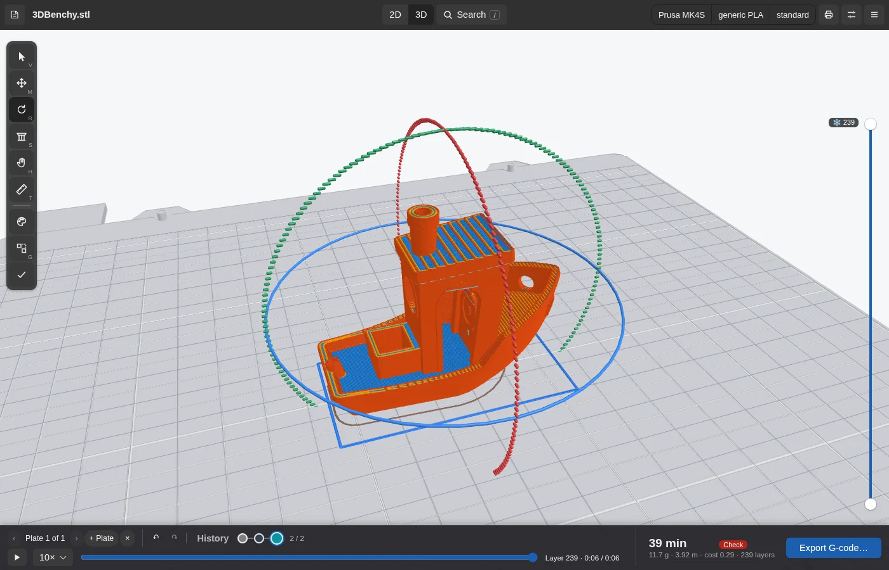

Everyday tasks
5Place the parts
Move, turn, scale, and cut the parts on the bed. A part obeys physics: if it cannot stand, it falls over.

Select a part
Click a part with the Move tool (M). With another tool, hold Ctrl and click. The card of the part opens:
| Button | What it does |
|---|---|
| Duplicate (D) | A copy at a free place, with the settings of the part. |
| Split to parts | Each separate body becomes a part. |
| Cut… | Cuts the part in two with a level plane. |
| Best orientation, Less support | Turns the part. |
| Scale, Reset | The scale in %, or the turn and the scale of the file. |
| To a new plate | Moves the part to a new plate. |
| Remove (Delete) | Removes the part. |
| Make [10] in all | Copies, until there are that many. |
| + Add a setting for this part | A setting for this part only. |
Tab and Shift+Tab select the next part. Esc clears the selection.
Select several parts
Hold Shift and click a part to add it to the selection. Shift and a click on a selected part takes it out. Each selected part has a blue box on the bed. The card shows how many parts there are, and the actions for all of them:
| Button | What it does |
|---|---|
| Duplicate (D) | A copy of each part. The copies are the new selection. |
| Arrange the plate | Puts all the parts of the plate in rows. |
| To a new plate | Moves the parts to one new plate. |
| Remove (Delete) | Removes the parts. |
| + Add a setting for these parts | A setting for each of the parts. |
To move them all, drag one of them with the Move tool (or Ctrl and a drag), or press the arrow keys. Each action is one step of the history: Ctrl+Z undoes it.
Move and turn
- Move. Drag the part with the Move tool. The arrow keys move it 1 mm (Shift: 10 mm).
- Turn on the bed. Turn the wheel over the part with the Move tool: 15° for each step.
- Turn about any axis. Press R. Drag a ring: red turns about X, green about Y, blue about Z.

A part falls over

After a turn, zslice checks if the part can stand while it prints. The first layer and the brim stick to the bed, and the nozzle pushes on the top of the part from the side. If the bond of the first layer cannot hold the part against this push and its weight, the part falls onto a face, as on a real bed. A note says so. A brim makes the bond larger: a tall thin part that falls with no brim can stand with one, and the Check list says that the brim holds it. With support on, the support holds the part, and it stays as you turned it.
Grab a part
Press H for the Grab tool. Then:
- Click a part to pick it up.
- Move the pointer to carry it. The wheel lifts it. Alt and a move turn it (Shift: steps of 15°).
- Click again, or press Esc, to let go. With support off, the part falls and rests flat. With support on, it keeps its turn.
Placement
Right-click a part, then Placement:
- Smart placement: the least support, the most area on the bed, and a low height.
- Less support: the least support only.
- Strong along X, Y, or Z of the part: a print is weakest across its layers. So the part turns until that axis lies in the layers.
- Put this side on the bed: the side at the click goes down.
Right-click the empty view for Arrange the plate. The main menu also has Smart placement, Arrange the plate, and Clear the plate for all parts of the plate.
Cut a part
- Select the part, and click Cut….
- Set the height of the cut. An orange plane shows it.
- Keep Turn the top over on: the top prints on its flat cut face.
- Keep Pegs to line up the parts on, and pick the count and the size.
- Click Cut.
After the print, glue the pegs into the holes of one part, and press the other part on.
Print with more than one filament
A plate can have more than one filament. Each filament has its own material and color, and the view shows each line in the color of its filament.
- Click the print time at the bottom right. The card lists the filaments of the plate.
- Click + Add a filament. Click its color to pick another color, and pick its material.
- Give a part a filament: select the part, and click a color chip on the Filament row of its card.
- Give some layers a filament: drag over the layers with the Select tool, and click a color chip on the Filament row of the card of the layers.
The G-code changes the filament where it changes. Set how the printer does this in the printer settings (Filament change):
- pause: the printer has one filament path. The print pauses (M600, or PAUSE on Klipper), and you change the filament.
- tool: a unit feeds many filaments (a Bambu Lab AMS, a Prusa MMU). The G-code has a tool change (T0, T1, …), and the nozzle flushes the old color out.
Paint a part
The Paint tool (P) paints filaments on the surface of a part. The view shows the part itself, in the colors of its paint.
- Select the part, and press P. With no part selected, the tool paints the first part.
- Click a filament chip on the card.
- Paint:
- Smart select: move the pointer over the part. The region under it lights up. Click to paint it. A raised letter or a logo is one region: its top and its sides. A flat face or a smooth surface is one region too. Shift and a click add more regions; a click on another chip then paints all of them.
- Brush: drag over the surface. The size sets the radius of the brush. The edge of the brush splits the triangles under it, so the border is clean.
- Right drag turns the view, and a middle drag pans. Press P or Esc to close the tool.
Remove all paint on the card gives the whole part its own filament again. Each click or stroke is one step of the history, so Ctrl+Z takes back the last one.
The web app, the Linux app, and the Mac app all have the Paint tool. In the Linux app, the part card of a painted part shows a chip for each filament of its paint, and its Paint button opens the tool on the part.
Each click or stroke slices again. Each region of a layer prints with its own walls and infill in its filament. A painted top face prints its color in its top layers.
A 3MF file keeps the paint. Painted models from MakerWorld (Bambu Studio) and Printables (PrusaSlicer) open with their colors and filaments.
The prime tower, the check, and Bambu Lab
With tool, a prime tower stands next to the parts (back right, or at Prime tower x and y): after each change the nozzle flushes the old color into it, and it grows with the print up to the last change. The Bambu Lab X2D profile has the filament change G-code of Bambu Lab: its AMS flushes into the chute, and the tower gets a small prime. Export makes a .gcode.3mf file for a Bambu Lab printer, with the filaments of the print. Print sends this file to the printer through a printdeck.
The check (the check mark in the tools) warns about a painted region narrower than a line, about a prime tower off the bed or on a part, and about many changes or long change time.
The card shows the grams of each filament and the number of changes. A level with parts of many filaments prints the filament in the nozzle first, so it changes the filament at most once for each filament on it.